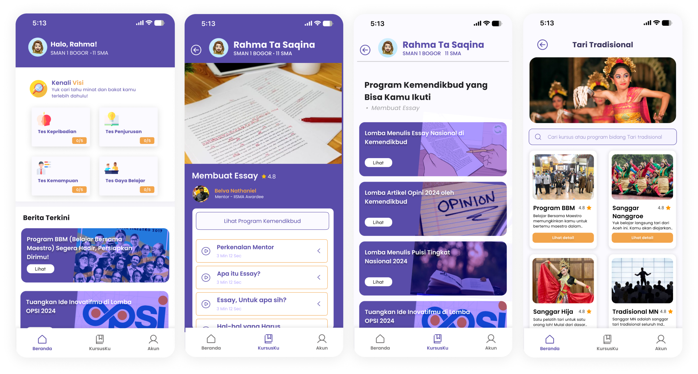
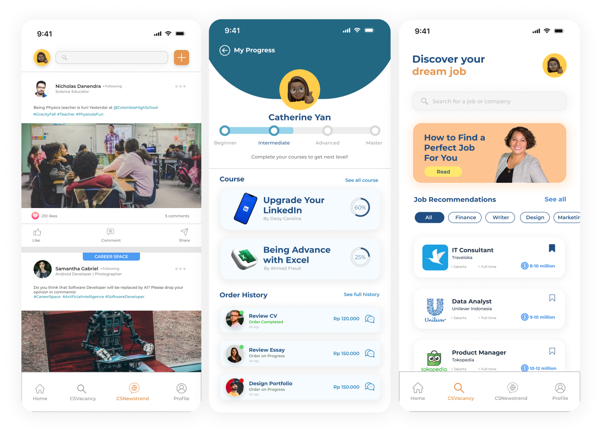
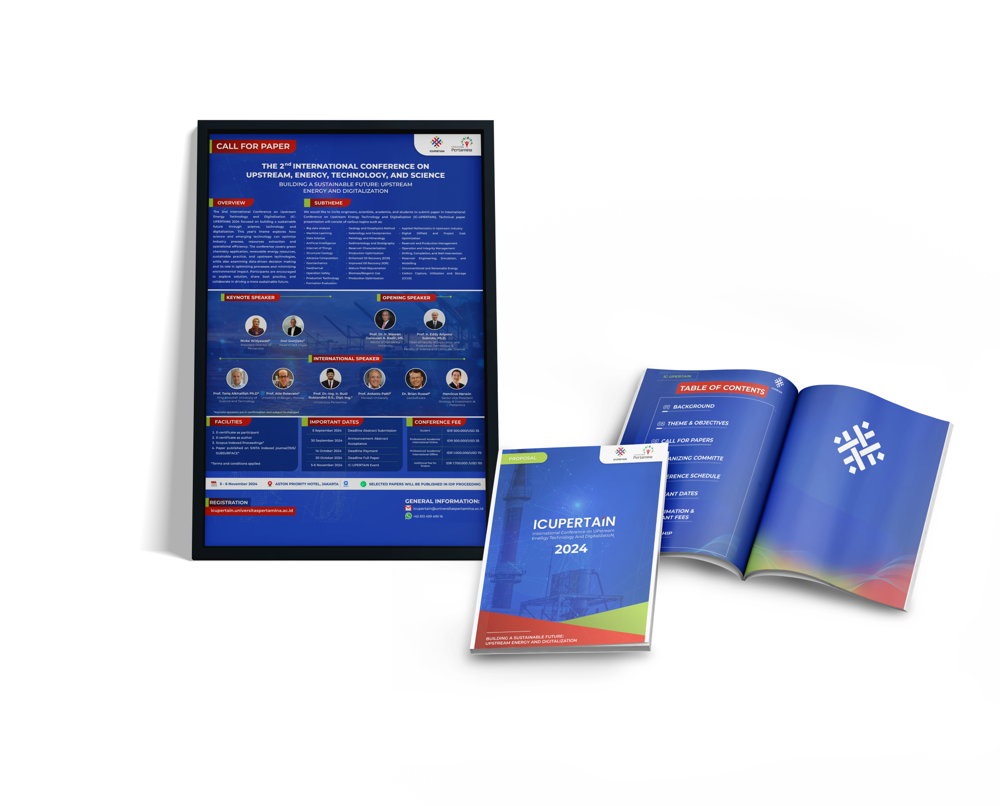

Project Portfolio »

UI Design-Visiku
Visiku is a skill-development app that offers courses to enhance non-academic abilities, featuring a user-friendly
design with a purple color scheme, clear navigation, and engaging visual elements like course previews and user
profiles.

UI Design-Career Station
Career Station is an app that provides job listings and helps users prepare for their careers. This design was
created using design hierarchy and focuses on user-friendliness.

UI Design-Sidang Scheduling
This Final Project Scheduling website automates the process of scheduling thesis defenses and providing feedback,
featuring a clean UI with login forms, student biodata input fields, and an intuitive dashboard for checking schedules
and submitting proposals.

Design for Event IC-UPERTAIN
IC-UPERTAIN stands for International Conference on Upstream, Energy, Technology and Digitalization. I am part of
the design team for this event, responsible for creating designs for the proposal, posters, banners, merchandise,
and social media content.

Design for Event-Open House
For my study program's Open House event, I was part of the design team responsible for all the event's design needs.
This included designing banners and merchandise such as mugs, books, tote bags, and t-shirts.


 LinkedIn
LinkedIn
 Github
Github